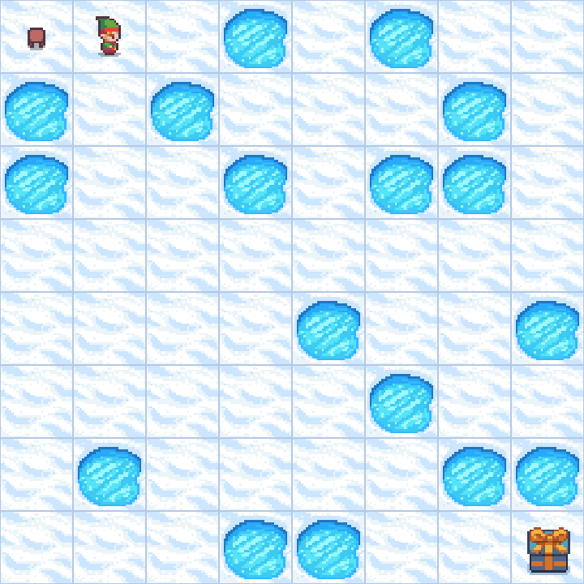
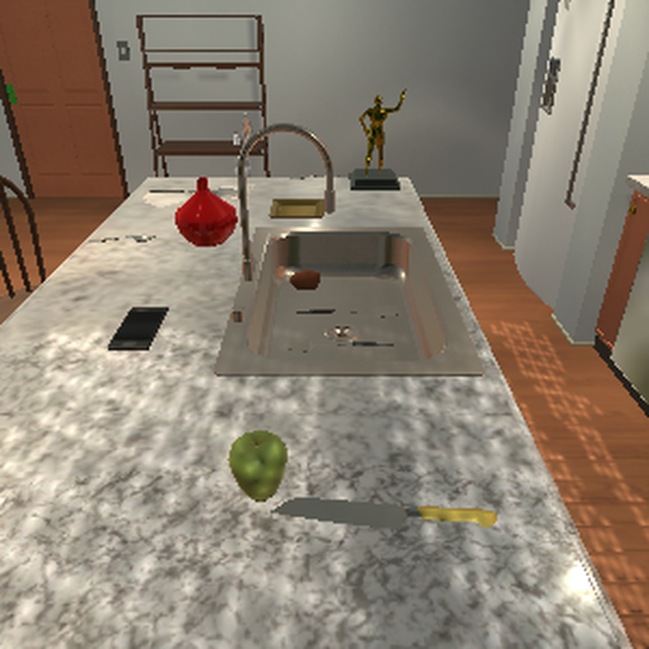
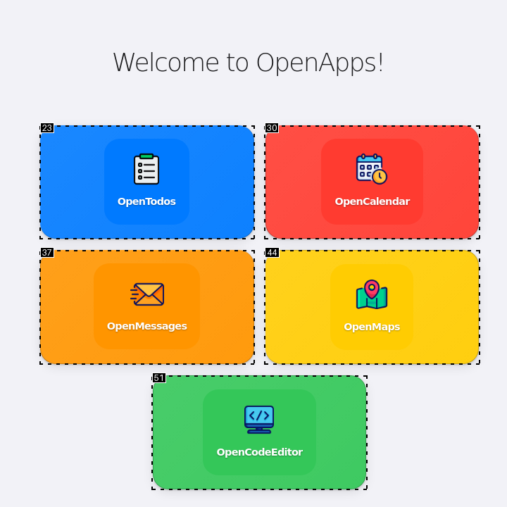
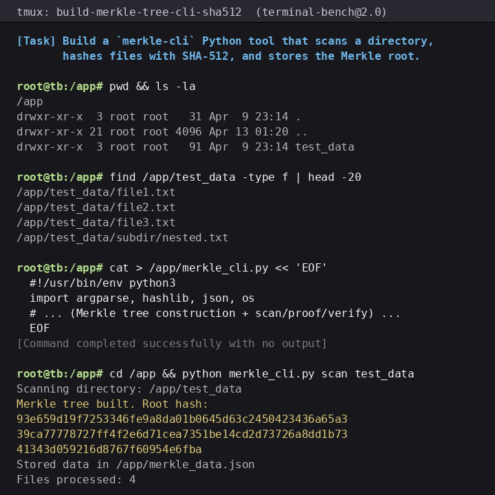

A training-free testbed for dense supervision
Evaluate a reward signal
before you train.
Long-horizon LLM agents take hundreds of actions, yet an outcome-only reward tells them nothing about the steps along the way. QVal measures whether a dense supervision signal is Q-aligned, so signal quality can be judged on common ground, cheaply, and apart from the engineering of any training pipeline.
The tool
A testbed for the post-training community
Dense supervision methods all try to score intermediate steps. But they are evaluated by their downstream post-training performance.
That is expensive, it conflates the quality of the signal with the engineering choices around it, and it makes methods that require different training setups impossible to compare.
“Can we evaluate dense supervision signals in isolation, before expensive post-training runs?”
A dense supervision method assigns a scalar score k(s, a) to each
action. QVal measures one property: whether that score ranks decisions the way their
eventual return does.
The reference Q-value is the expected return of continuing from (s, a)
under a strong reference policy (e.g., an optimal policy or a frontier model).
Predictions live on incompatible scales, so we compare the ordering they
induce, reporting Spearman ρ against the reference labels.
Same inputs, same targets, fixed backbones.
How it works
The same five-stage recipe runs for every environment. You can skip the first three and use our pre-collected datasets.
- Collect trajectories. Roll agents out in multi-turn environments.
-
Sample state–action pairs. Draw
(s, a)pairs along the trajectories as evaluation points. - Label with reference Q-values. Restore each state, force the action, follow the reference policy, and record the discounted return. Use Monte-Carlo estimates for stochastic policies/environments.
- Collect method predictions. Run the method of interest to score every pair.
- Evaluate by rank correlation. Report Spearman ρ between the method's scores and the reference labels.
For one sampled point
-
Collect & sample
a state–action pair from a trajectory
→ (s, a) -
Label · MVMC
max return over k rollouts
→ Q*(s, a) -
Predict
the method's scalar score
→ k(s, a)
Measure Q-alignment
Quickstart
The methods, environments, and their datasets are all included. To score a built-in method on a built-in environment, install once, then generate the configs, predict, and evaluate.
# clone llenvs next to qval (path dependency)
git clone https://github.com/serhez/llenvs
git clone https://github.com/bethgelab/qval
cd qval
uv pip install -e ".[all]"python scripts/generate_configs.pypython scripts/pipeline/predict.py --config \
catalogs/qval_benchmark/configs/prediction/frozen_lake/100pt_8x8_q35-27-or_text.yaml# discovers every prediction, writes the correlations
python scripts/pipeline/evaluate.py
Models are served through the backends declared in
shared/configs/backends.yaml.
For full runs, the wrappers in
scripts/slurm/ submit each step as a cluster job.
Extending QVal
QVal runs on your own methods and environments. Register them in a catalog file
(catalogs/<your_experiment>/catalog.py), then rerun
generate_configs.py to build their configs.
add-method
A method turns a (state, action, next_state) step into a scalar.
Subclass DenseSignalMethod and implement
evaluate (override evaluate_batch if it batches), register
its type in method_factory.py, then append a
MethodSpec to the catalog and regenerate.
class MyMethod(DenseSignalMethod):
def evaluate(self, point: EvaluationPoint) -> float:
# point.state / action / next_state / history;
# self.context: task & reward text, signal_type …
return float(...) # math.nan on failureadd-environment
Environments come through llenvs, a stateless interface (env.step(state, action)
is pure) that makes Monte-Carlo rollouts from arbitrary states possible. Write an
environment-context YAML, add an EnvironmentSpec to the catalog,
collect a dataset once, and regenerate.
adapter: my_env # an llenvs adapter
env_name: my_env:eval
max_steps: 40
reward_signal_name: task_completion
task_description: >-
The agent acts in …
evaluator_extractor: # method text → number
type: numericThe benchmark
QVal-v1.0
It is the first instance of the QVal methodology: the exact methods, environments, and datasets scored below.
Environments
Spanning text and vision, from closed-action navigation to open-ended shell use.




Leaderboard
Explore every method's Q-alignment below.
Findings
Main results
Simple prompting is the strongest baseline.
Ranking and direct value prediction reach the highest Q-alignment in every environment and backbone, outperforming newer and more specialized dense-supervision methods.
Performance clusters by family.
Correlations fall into tight bands within each of the seven families: the family predicts a method's behavior better than its individual design. Code methods are the exception, with by far the widest spread, since their effectiveness depends on how easily a state and action space can be written in code.
Added complexity rarely helps.
Elaborate variants don't reliably beat the simplest one in their family.
Multi-estimate and batched/sequential direct prompting don't significantly outperform
direct-single; privileged self-distillation (sdpo-gt)
doesn't improve on plain sdpo; averaging generated functions
(codegen-avg) lifts the mean over codegen only slightly.
Difficulty doesn't predict alignment.
From closed-action FrozenLake to open-ended TerminalBench, Q-alignment does not fall monotonically with difficulty. Direct prompting stays positive everywhere; code and ranking weaken in open-ended settings, while self-distillation grows stronger where richer intermediate feedback is available.
Robustness
Text beats vision.
On environments that provide both, methods recover reference values more reliably from text than from images.
Rankings survive the choice of target.
Relabelling with state-values V(s) instead of Q-values largely
preserves the method ordering. Absolute scores shift (code and pre-trained methods
align better with state-values, direct prompting with Q-values), but not the order.
Implications
Signal quality is conflated with training recipes.
Because plain prompting is competitive when measured directly, much of the reported progress of complex methods may come from changes in data, compute, exploration, prompting, or optimization rather than from a better dense signal. Measuring Q-alignment first separates the two.
Score interpretation.
QVal measures signal quality on its own and leaves integration as a separate downstream question. It is a cheap diagnostic that filters candidate signals before expensive training runs, not a replacement for them.
Citation
Loading…